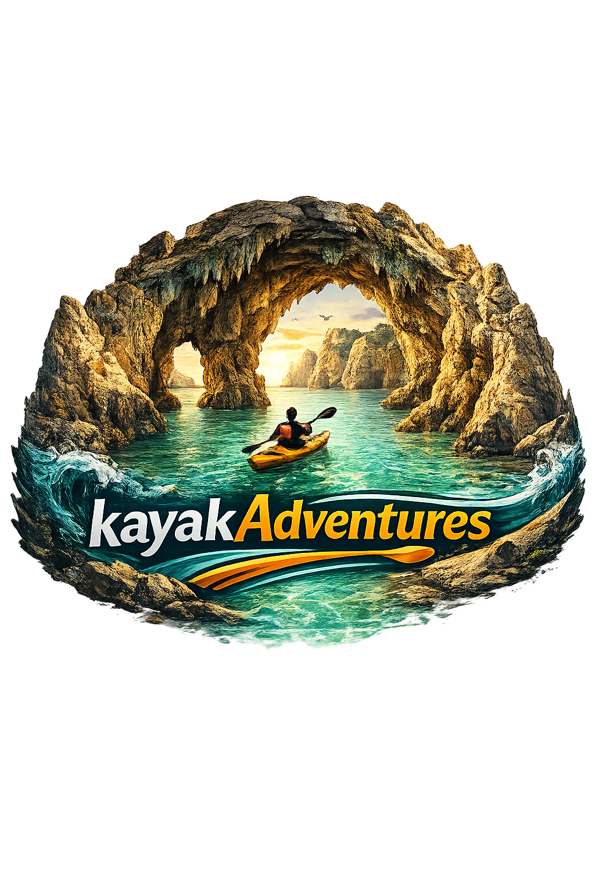
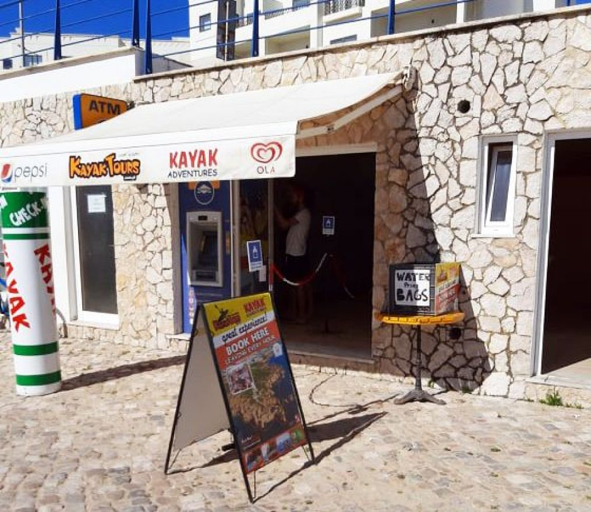

Explore as famosas grutas da Ponta da Piedade

Embarque numa aventura inesquecível de kayak pela costa mais espetacular do Algarve. O nosso tour de 2 horas e meia leva-o através das impressionantes formações rochosas da Ponta da Piedade, um dos locais mais emblemáticos de Portugal.
Durante o percurso, irá explorar grutas escondidas com tetos esculpidos pela natureza, navegar através de arcos naturais de calcário dourado e descobrir praias secretas acessíveis apenas por mar. Os nossos guias certificados irão partilhar consigo a história geológica e cultural desta costa mágica.
Quer seja um kayakista experiente ou um iniciante completo, este tour é para si. Fornecemos todo o equipamento necessário e um briefing completo de segurança antes de partirmos.
O que esperar durante a aventura
Chegue 15 min antes. Receba o equipamento e o briefing completo de segurança e técnicas de kayak.
Partimos da praia e remamos ao longo da costa com vistas espetaculares sobre as falésias douradas.
Entre nas grutas escondidas, passe por arcos naturais e descubra formações rochosas impressionantes.
Paramos numa praia para um mergulho rápido (oferecemos máscaras de snorkel) antes de regressar ao ponto de partida. Nota: O Sunset Tour (18:00) não inclui paragem na praia.
Praia cais da solaria — encontramo-nos aqui!
Os lugares são limitados. Reserve agora e garanta a sua aventura no Algarve.
Reservar Agora